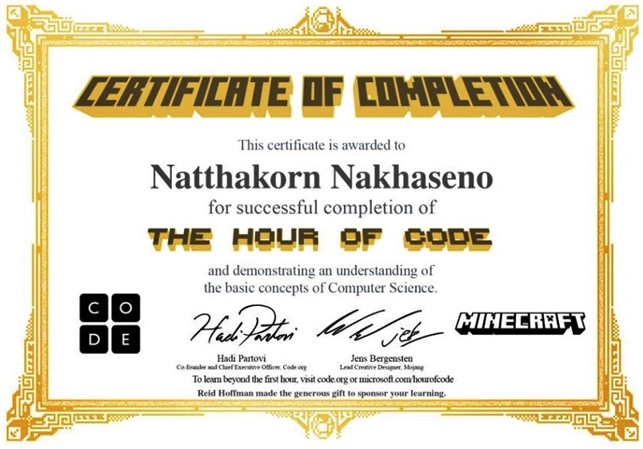
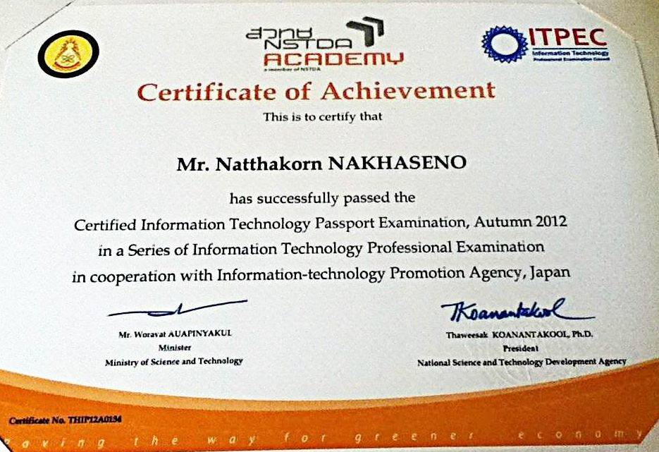
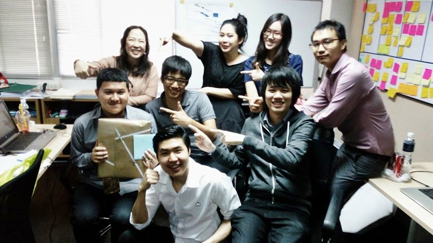
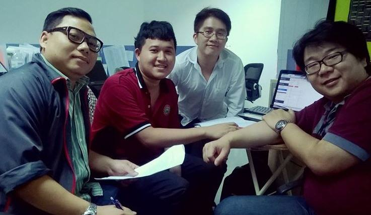

<style>
    .ban_skill {
        background-color: #EDFCFF;
        padding: 10px;
    }
    
    .img_past {
        width : 100%;
        padding-top: 3px;
    }
    
    @media only screen and (min-width: 700px){
        #map_tol {width: 100%; height: 200px;}
        #map_tol_2 {width: 100%; height: 200px;}
        #img_student { width: 200px; }
        #graph_backend{
            height: 300px;
        }
        #graph_frontend{
            height: 300px;
        }
        #graph_db{
            height: 300px;
        }
        #graph_other_skill{
            height: 300px;
        }
        .story_text {
            padding-left: 16px;
        }
    }
    @media only screen and (max-width: 699px){
        #map_tol {width: 100%; height: 140px;}
        #map_tol_2 {width: 100%; height: 140px;}
        #img_student {width: 40%; }
        #graph_backend{
            height: 250px;
        }
        #graph_frontend{
            height: 250px;
        }
        #graph_db{
            height: 250px;
        }
        #graph_other_skill{
            height: 250px;
        }
        .story_text {
            padding-left: 7px;
        }
    }
</style>

<ion-view view-title="CV">
    <ion-content overflow-scroll="true">
        <div class="rowly">
            <div class="coly-1"></div>
            <div class="coly-10">
                <div class="rowly">
                    <div class="desktop_left_70" >
                        <h2><b><span class="now_rap">Curriculum Vitae</span></b></h2>
                    </div>
                    <div class="desktop_right_30 desktop_center mobile_center" >
                        <a href=""></a>
                    </div>
                    <div class="desktop_left_70" >
                        <div class="story_text">
                            <br/>
                            <span class="now_rap"><b>Name : </b>Mr.Natthakorn&nbsp;&nbsp;</span>
                            <span class="now_rap"><b>Surname : </b>Nakhaseno&nbsp;&nbsp;</span>
                            <span class="now_rap"><b>Nickname : </b>Tron&nbsp;&nbsp;</span>
                            <br/>
                            <span class="now_rap"><b>Birthday : </b>Nov. 6 1992&nbsp;&nbsp;</span>
                            <span class="now_rap"><b>Nationality : </b>Thailand </span>
                            <br/>
                            <span class="now_rap"><b>Age : </b>{{tol_age}}&nbsp;&nbsp;</span>
                            <br/><br/>
                            <span class="now_rap"><b>Mail : </b>tron.natthakorn@gmail.com &nbsp; </span>
                            <span class="now_rap"><b>Mobile : </b>094 045 9870</span>
                            <br/><br/>
                            <span class="now_rap"><b>Address : </b>113/4 Polo 6 Wireless Rd.&nbsp;</span>
                            <span class="now_rap">Pathumone Bangkok 10330</span>
                            <br/>
                        </div>
                    </div>
                </div>
                <div class="rowly">
                    <br/>
                    <div id="map_tol">
                        <ng-map id="map_tol_2" center="[13.7332699, 100.5499809]" zoom="14">
                            <marker position ="[13.7332699, 100.5499809]" animation="Animation.BOUNCE" centered="true"></marker>
                        </ng-map>
                    </div>
                    <br/>
                </div>
                <div class="rowly">
                    <div class="desktop_left_50" >
                        <h3><b><span class="now_rap">Education</span></b></h2>
                            <div class="story_text">
                                <span class="now_rap"><b>May 2011 - Apr 2015</b></span><br/>
                                <b>Degree : </b>Bachelor Degree Of <span class="now_rap">Information Technology (IT)</span><br/>
                                <b>School : </b>Panyapiwat Institute <span class="now_rap">Of Management</span><br/>
                                <span class="now_rap"><b>GPA : </b>3.67</span><br/>
                                <span class="now_rap"><b>Duration : </b>4 Years</span><br/>
<!--
                                <br/>
                                <span class="now_rap"><b>May 2008 - Apr 2011</b></span><br/>
                                <b>Degree : </b>Senior High School of Art <span class="now_rap">and Math</span><br/>
                                <b>School : </b><span class="now_rap">Trimit Wittayalai School</span><br/>
                                <span class="now_rap"><b>Duration : </b>3 Years</span><br/>
                                <br/>
                                <span class="now_rap"><b>May 2005 - Apr 2008</b></span><br/>
                                <b>Degree : </b>Junior High School<br/>
                                <b>School : </b><span class="now_rap">Benchamarachuthit Chanthaburi  School</span><br/>
                                <span class="now_rap"><b>Duration : </b>3 Years</span>
-->
                            </div>
                        
                        <h3><b><span class="now_rap">Dream Work</span></b></h2>
                            <div class="story_text">
                                - Work with understand together at lease 1 year and more like be family. <br/>
                                - Flexible time for work such as possible late 1 days/week (Often work hard all night everyday).
                            </div>
                        
                        <h3><b><span class="now_rap">Advantage</span></b></h2>
                            <div class="story_text">
                                - Never miss the meeting at any time. <br/>
                                - Normally I can coding 3 days without sleep , coffee and go home. (Please do not chase me to home if work is hurry ^^) <br/>
                                - Really like to work in holiday (Sat & Sun) <br/>
                                - Never think for retire because other place give more money. <br/>
                                - Never play social media or game in work time. (Set block site) <br/>
                                - Really like to learn new technology of programming. <br/>
                                - Understand serious time of work from my experience. <br/>
                                - I can drink on friday night for everyone. <br/>
                                - I think I good in english for reading and summarize essence. <br/>
                                - Still have helpful connection to CTO of old 2 company. <br/>
                                - I ever and can find more young and junior programmer for company.
                                (Connection to my college)
                                <br/>
                                - I can help IT work and network of company but do not desire head of IT until lose programmer skill. (I have connection with expert of network friend, too)
                                <br/>
                                - Never leave incomplete work and retire. <br/>
                                - Never angry everyone because I do not know why to angry. <br/>
                                - Do not worry about doing document about system such as API Doc , DFD , ER-Diagram , Flow Chart , Use Case etc. <br/>
                                - I have bad experience but it make me better strong and understand. <br/>
                                
                            </div>
                        <h3><b><span class="now_rap">Disadvantage</span></b></h2>
                            <div class="story_text">
                                - Probably late 1 days/week (solve by sleep at company) <br/>
                                - Do not like have lunch. Rarely have lunch. <br/> (Except snack and fruit) <br/>
                                - I can write code all day and night but best code come from night time. <br/>
                                - Rarely I said 1 day for work but I use 2 days (x2 from thinking) <br/>
                                - I am not strong in english either grammar, listening or speak.(Attempting to improve) <br/>
                                - In past I always agree for other opinion without argue. (I current resolve this)
                                <br/>
                                - Sometime do not get joke gag of friend. <br/>
                                - In past I ever like to admit for other mistaken that make me false. (I current resolve this) <br/>
                                - Do not like network task such as router but can basic do, ask google or call friend help in holiday. <br/>
                                - I have bad experience but it make me better strong and understand. <br/>
                            
                                
                            </div>
                        
                        <h3><b><span class="now_rap">Quote From Experience</span></b></h2>
                            <div class="story_text">
                                Run away from a problem is a short while feel because sometime you think it is proper way for solve but it isn't a proper way for yourself.
                                
                            </div>
                        
                        <h3><b><span class="now_rap">Salary</span></b></h2>
                            <div class="story_text">
                                <span class="now_rap"><b>Expected :</b> 40000 THB &nbsp;</span>
                                <span class="now_rap"><b>Past :</b> 25000 THB <br/></span>
                            </div>
                        
                        <h3><b><span class="now_rap">Certificate</span></b></h2>
                            <div class="story_text">
                                <b>Hour of code</b><br/>
                                
                                <b>ITPE</b> <br/>
                                <br/><br/>
                                
                            </div>
                        
                        <br/>
                        
                    </div>
                
                    <div class="desktop_right_50" >
                        <h3><b><span class="now_rap">History Work & Life</span></b></h2>
                            <div class="story_text">
                                
                                <span class="now_rap"><b>Sep 2016 - Jan 2017</b></span><br/>
                                <span>
                                    Introspect myself. Practise english skill. Help family work. Take care my grandmother. Help friend work for coding.
                                </span><br/><br/>
                                <div class="fb-post" data-href="https://web.facebook.com/tron.json/posts/194907357656795:0" 
                                     data-width="auto" data-show-text="true">
                                </div>
                                <br/>
                                
                                <hr/><br/>
                                
                                <span class="now_rap"><b>June 2016 - Sep 2016</b></span><br/>
                                <b>Job : </b><span class="now_rap">Backend API Developer</span><br/>
                                <b>Place : </b><span class="now_rap">Getlinks.co</span><br/>
                                <b>Tech : </b><span class="now_rap">Restful API + Postgres</span><br/>
                                <b>Duration : </b><span class="now_rap">3 Months</span><br/>
                                <b>Reason for leave : </b>
                                <span>
                                    That time I am not happy in restriction. 
                                </span>
                                <span> 
                                    Such as morning everyday.
                                
                                    <b>Affect to salary.</b> 
                                </span>
                                <span> 
                                    It should more flexible for work hard some night.
                                </span>
                              
                                <br/><br/>
                                <hr/><br/>
                                
                                <span class="now_rap"><b>Jan 2016 - May 2016</b></span><br/>
                                <b>Job : </b><span class="now_rap">Laravel Developer + IT Support</span><br/>
                                <b>Place : </b><span class="now_rap">INFINITI Global Investor</span><br/>
                                <b>Tech : </b><span class="now_rap">Laravel 5.2 + Git</span> + Scrum<br/>
                                <b>Duration : </b><span class="now_rap">5 Months</span><br/>
                                <b>Reason for leave : </b>
                                <span class="now_rap">
                                    Short while feel to do that. 
                                </span>
                                <span class="now_rap"> 
                                    I leave the future of head IT.
                                </span>
                                <span class="now_rap"> 
                                    Because I desire to be programmer 
                                </span>
                                <span class="now_rap">not head of IT Support.</span>
                                <span> 
                                    <b>(Sometime I think this is mistaken decision of my life)</b>
                                </span>
                                
                                <span> 
                                    <b>If I see this pic in that time. I believe I should not retire. </b>
                                </span><br/><br/>
                                <hr/>
                                
                                <br/>
                                <span class="now_rap"><b>May 2015 - Oct 2015</b></span><br/>
                                <b>Job : </b><span class="now_rap">Programmer for teacher.</span><br/>
                                <b>Place : </b>Panyapiwat Institute <span class="now_rap">Of Management</span><br/>
                                <b>Tech : </b><span class="now_rap">MEAN Stack</span><br/>
                                <b>Duration : </b><span class="now_rap">5 Months</span><br/>
                                <b>Reason for leave : </b>
                                <span class="now_rap">
                                    Want to work in real world.
                                </span>
                                <span class="now_rap">
                                    And work do not have social welfare.
                                </span>
                                <br/><br/>
                                <hr/><br/>
                                <span class="now_rap"><b>May 2014 - Feb 2015</b></span><br/>
                                <b>Job : </b><span class="now_rap">Trainee student programmer</span><br/>
                                <b>Place : </b><span class="now_rap">True Corporation.</span><br/>
                                <b>Tech : </b><span class="now_rap">PHP + MySQL + Thai Text Analysis</span><br/>
                                <b>Duration : </b><span class="now_rap">10 Months</span><br/>
                                <b>Reason for leave : </b>
                                <span class="now_rap">
                                    Out of contract 10 Month.
                                </span>
                                
                                <span>
                                    <b>Someone call me software engineer but I think I only be programmer.
                                    </b>
                                </span>
                                <br/><br/>
                                <hr/><br/>
                                
                                <span class="now_rap"><b>Dec 2012 - Mar 2013</b></span><br/>
                                <b>Job : </b><span class="now_rap">Trainee student programmer</span><br/>
                                <b>Place : </b><span class="now_rap">Pakgon co., ltd.</span><br/>
                                <b>Tech : </b><span class="now_rap">CakePHP 2 + MySQL</span><br/>
                                <b>Duration : </b><span class="now_rap">3 Months</span><br/>
                                <b>Reason for leave : </b>
                                <span class="now_rap">
                                    Out of contract 3 Month.
                                </span>
                                <br/><br/>
                                <hr/><br/>
                            </div>
                    </div>
                </div>
                <div class="rowly ban_skill">
                    <h3><b><span class="now_rap">Programmer Exp.</span></b></h2>
                        <span class="story_text">
                            <span class="now_rap">Self Assessment. Max point is 10</span>
                            <span class="now_rap">(Updated : 17/02/2017)</span>
                        </span>
                        <br/><br/>
                        <div class="desktop_left_50">
                            <div id="graph_backend"></div>
                        </div>
                        <div class="desktop_right_50">
                            <div id="graph_frontend"></div>
                        </div>
                        <div class="desktop_left_50">
                            <div id="graph_db"></div>
                        </div>
                        <div class="desktop_right_50">
                            <div id="graph_other_skill"></div>
                        </div>
                </div>
            </div>
            <div class="coly-1"></div>
        </div>
    </ion-content>
</ion-view>

